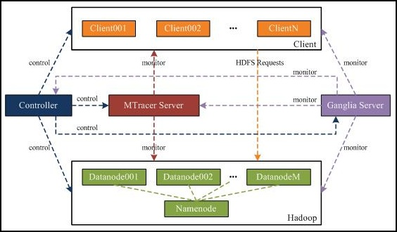

TraceBench is an open data set for trace-oriented monitoring, collected using MTracer on a HDFS system deployed in a real IaaS environment. When collecting, we considered different scenarios, involving multiple scales of clusters, different kinds of user requests, various speeds of workloads, etc. In addition to recording the traces when the HDFS runs normally, we also collected the traces under the situations with various faults injected. There are 17 faults we have injected, including function and performance faults (and real system bugs). The traces in TraceBench are clustered in different MySQL files, and each file records the traces collected under a certain situation. The total collection time of TraceBench is more than 180 hours, resulting 364 files that record more than 370,000 traces. We believe TraceBench is helpful for the research of trace-based monitoring and many other topics.
| • Jingwen Zhou, Zhenbang Chen, Ji Wang, Zibin Zheng, and Michael R. Lyu, "TraceBench: An open data set for trace-oriented monitoring," in Proceedings of the 6th IEEE International Conference on Cloud Computing Technology and Science (CloudCom 2014), pp. 519¨C526. IEEE Computer Society, 2014. DOI: 10.1109/CloudCom.2014.79 |
|
@inproceedings{Zhou-CloudCom-2014,
title={TraceBench: An open data set for trace-oriented monitoring},
author={Jingwen Zhou, Zhenbang Chen, Ji Wang, Zibin Zheng, and Michael R. Lyu},
booktitle={Proceedings of the 6th IEEE International Conference on Cloud Computing Technology and Science (CloudCom 2014)},
publisher={IEEE Computer Society},
pages={519¨C526},
year={2014},
url={http://mtracer.github.io/TraceBench/},
doi={10.1109/CloudCom.2014.79},
}
|
Download TraceBench (zip, tar.gz). Maybe you also need MTracer-Viz for visualization.
Or, you can see TraceBench on line.
| Request | Description | Details | |
|---|---|---|---|
| 1 | ls | list all files in HDFS | Trace Tree | Events | Edges |
| 2 | copyFromLocal | upload a file (1 data blocks) from local to HDFS | Trace Tree | Events | Edges |
| 3 | copyToLocal | download a file (2 data block) from HDFS to local | Trace Tree | Events | Edges |
| 4 | copyFromLocal | a write requst with function fault, reflecting in Trace Tree and the Description field of Events | Trace Tree | Events | Edges |
| 5 | copyToLocal | a read requst with performance fault, reflecting in the latencies of events | Trace Tree | Events | Edges |
| Table | Fields | Description |
|---|---|---|
| Event | TraceID | ID of the trace containing this event. |
| NID | Mentioned above. | |
| OpName | Name of the operation recorded by this event. | |
| StartTime/EndTime | Timestamps of starting/finishing the operation. | |
| HostAddress/HostName | Host IP/Name of generating this event. | |
| Agent | Location of the operation inside the code, usually meaning class. | |
| Description | Some results of executing the operation, including exceptions. | |
| Edge | TraceID/FatherNID/FatherStartTime/ChildNID | Mentioned above. |
| Trace | TraceID | Mentioned above. |
| Title | Name of the trace. | |
| NumEvents/NumEdges | Number of events/edges included by this trace. | |
| FirstSeen/LastUpdated | Time of first/last receiving the data in this trace on monitor server. | |
| StartTime/EndTime | Timestamps of starting/finishing this event. | |
| Operation | OpName | Name of the operation, corresponding to the OpName field in Event table. |
| Num | Number of events recording this operation. | |
| MaxLatency/MinLatency/AverageLatency | Maximal/minimal/average latency of this operation. |
Data in Trace and Operation are the statistic information, which can be extracted from the Event and Edge. In other words, the Event and Edge record all needed data of traces.
| Class | Type | Fault | Workload | Variable |
|---|---|---|---|---|
| Normal (NM) | Clientload (CL) | - | r/w/rw/rpc/rwrpc | 1,5i Clients (C) |
| Datanode (DN) | - | r/w/rw | 1,5i datanodes (DN) | |
| Abnormal (AN) | Process (Proc) | killDN | r/w | 0,1,2,3,4,5i FDN |
| suspendDN | r/w | 1,2,3,4,5i FDNs | ||
| Network (Net) | disconnectDN | r/w | 1,2,3,4,5i FDN | |
| slowHDFS | r/w/rpc | 0,10i/2i/100i ms | ||
| slowDN | r/w | 1,2,3,4,5i FDNs | ||
| Data | corruptBlk | r | 0,1,2,3,4,5i FDN | |
| corruptMeta | r | 0,1,2,3,4,5i FDN | ||
| lossBlk | r | 1,2,3,4,5i FDN | ||
| lossMeta | r | 1,2,3,4,5i FDN | ||
| cutBlk | r | 1,2,3,4,5i FDN | ||
| cutMeta | r | 1,2,3,4,5i FDN | ||
| System (Sys) | panicDN | r/w | 1,2,3,4,5 FDN | |
| deadDN | r/w | 1,2,3,4,5 FDN | ||
| readOnlyDN | w | 1,2,3,4,5 FDN | ||
| Combination (COM) | Single (Sin) | Process (Proc) | rwrpc | 1,2,3 |
| Network (Net) | rwrpc | 1,2,3 | ||
| Data | rwrpc | 1,2,3 | ||
| System (Sys) | rwrpc | 1,2,3 | ||
| Bug | rwrpc | 1,2,3 | ||
| Multiple (Mul) | AnarchyApe (AA) | rwrpc | 1,2,3 |
In TraceBench, we name a set of traces according to the items of the columns in the table, i.e., ¡°[Class](_[Type](_[Fault](_[Workload](_[Variable])?)?)?)?¡± in the form of the regular expression, where the words means the sets of items appeared in corresponding columns of the table. In addition, abbreviations given in the brackets in the table are used for compressing the names. As an example, the trace set named as Normal_Clientload_-_r, or NM_CL_r for short, contains the traces collected under the workload r in the Clientload type of Normal class.

During collection, we introduce following 5 workload:
| Workload | Contained HDFS requests |
|---|---|
| r | copyToLocal |
| w | copyFromLocal |
| rpc | mkdir, touchz, mv, chmod, chown, ls, count, rmr |
| rw | r+w |
| rwrpc | r+w+rpc |
| Type | Fault | Description | Category | Selected From |
|---|---|---|---|---|
| Process | killDN | Kill the HDFS processes on some datanodes | Functional | AnarchyApe |
| suspendDN | Suspend the HDFS processes on some datanodes | Functional | ||
| Network | disconnectDN | Disconnect some datanodes from network | Functional | |
| slowHDFS | Slow all the HDFS nodes | Performance | ||
| slowDN | Slow some datanodes | Performance | ||
| Data | corruptBlk | Modify all the data blocks on some datanodes | Functional | |
| corruptMeta | Modify all the metadata files on some datanodes | Functional | ||
| lossBlk | Delete all the data blocks on some datanodes | Functional | ||
| lossMeta | Delete all the metadata files on some datanodes | Functional | ||
| cutBlk | Remove some bits in all data blocks on some datanodes | Functional | ||
| cutMeta | Remove some bits in all metadata files on some datanodes | Functional | ||
| System | panicDN | Make the system panic on some datanodes | Functional | |
| deadDN | Make the system dead on some datanodes | Functional | ||
| readOnlyDN | Make the system read-only on some datanodes | Functional | ||
| Bug | HADOOP-3257 | The path in HDFS requests is limited by URI semantics | Functional | Hadoop issues repository |
| HADOOP-6502 | ls is very slow when listing a directory with a size of 1300 | Performance | ||
| HADOOP-7064 | rmr does not properly check permissions of files | Functional |
See the applications here.
{kind=link}
{kind=link}
{kind=link}
{kind=link}
{kind=link}